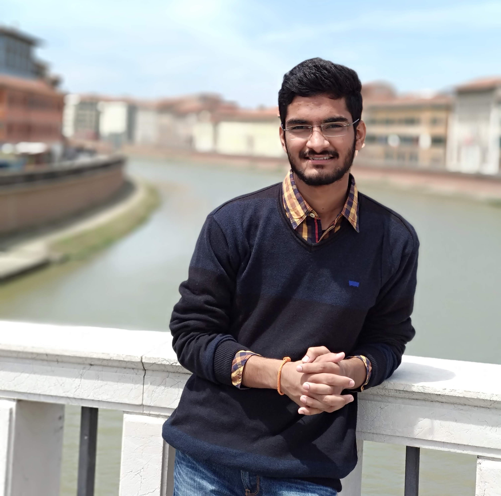

Sharath Chandra RaparthyI am a research intern at the Mila working closely with Prof. Irina Rish. Prior to this, I worked under the supervision of Prof. Liam Paull at intersection of reinforcement learning and robotics. Previously, I worked with Prof. Calogero Maria Oddo, at Neuro-Robotic Touch Laboratory at The BioRobotics Institute , Italy, and with Prof. Torbjorn Dahl at Plymouth University, United Kingdom, as a research intern. I also worked closely with a San Francisco based startup, Gulukul, as a deep learning intern. I recently completed my undergraduate degree from Visvesvaraya National Institute of Technology where I was a core co-ordinator at IvLabs, a robotics lab at VNIT. Besides research, I sometimes try to capture random moments. |
 |
Recent News |
|
ResearchMy research interest lies in the general area of Reinforcement Learning (RL), more specifically in meta-reinforcement learning (meta-RL) and continual learning. |

|
CuNAS - CUriosity-driven Neural-Augmented SimulatorSharath Chandra Raparthy, Melissa Mozifian, Liam Paull and Florian Golemo Robotics: Sicence and Systems; 2nd Workshop on Closing the Reality Gap in Sim2Real Transfer for Robotics, 2020 arxiv / code / Transfer of policies from simulation to physical robots is an important open problem in deep reinforcement learning. Prior work has introduced the model-based Neural-Augmented Simulator (NAS) method, which uses task-independent data to create a model of the differences between simulated and real robot. In this work, we show that this method is sensitive to the sampling of motor actions and the control frequency. To overcome this problem, we propose a simple extension based on artificial curiosity. We demonstrate on a physical robot, that this leads to a better exploration of the state space and consequently better transfer performance when compared to the NAS baseline. |

|
Generating Automatic Curricula via Self-Supervised Active Domain RandomizationSharath Chandra, Bhairav Mehta, Florian Golemo, Liam Paull Accepted to ICLR BeTR-RL workshop. Submitted to International Joint Conference on Artificial Intelligence (IJCAI), 2020 arxiv / code / slides / In this work, we build on the framework of self-play, allowing an agent to interact with itself in order to make progress on some unknown task. We use Active Domain Randomization and self-play to create a novel, coupled environment-goal curriculum, where agents learn through progressively more difficult tasks and environment variations. |

|
Curriculum in Gradient-Based Meta-Reinforcement LearningBhairav Mehta, Tristan Deleu*, Sharath Chandra* Christopher Pal, Liam Paull Accepted to ICLR BeTR-RL workshop. Submitted to Uncertainty in Artificial Intelligence (UAI), 2020 arxiv / code / In this work we study the under-studied parameter in meta learning, “Task Distributions”. We show that Model Agnostic Meta-Learning (MAML) is sensitive to task distributions, and learning a curriculum of tasks instead of uniformly sampling helps the adaptation performance substantially. |
|
|
Explicit Sequence Proximity Models for Hidden State IdentificationAnil Kota, Sharath Chandra, Parag Khanna, Torbjorn Dahl Thirty-second Conference on Neural Information Processing Systems (NeurIPS), Workshop on Reinforcement Learning Under Partial Observability, 2018 arxiv / code / We tackle the problem of hidden state identification in POMDPs. We show that more forgiving proximity models perform better than stricter models and that the difference between the models is more pronounced in the continuous navigation problem than in the discrete grid world problems. |
Past WorkThese include side projects and internships. |

|
GulukulInternship 2018-07-10 The aim of the project is to transfer the motion between human subjects in different videos using generative adversarial networks (GANs). We used an opensource implementation called OpenPose for detecting 2D pose keypoints for body, face and hand. We trained the GAN using google cloud virtual machine and used the architectures proposed in pix2pixHD paper. |

|
PARLOMA - Effective deaf-blind communicationInternship - Research under Prof. Calogero Maria Oddo at The BioRobotics Institute 2018-06-10 video / report / This work aims at designing a remote communication system for deaf-blind people where we focus on implementing state-of-the-art algorithms for 3d hand pose estimation using different approaches like deep learning, semi-supervised learning and random forest classifier. It involves the integration of haptic and robotic interfaces together with CNN based approaches for hand pose estimation and remote reproduction of tactile sign language (t-SL) by using one 3D printed bio-mimetic robotic hand. |
Mentorship |

|
IvLabsMentorship I am a former core committee member of IvLabs. I have been actively mentoring some motivated students on their projects. |
|
Of course, I didn't build this from scratch. Source stolen from here |